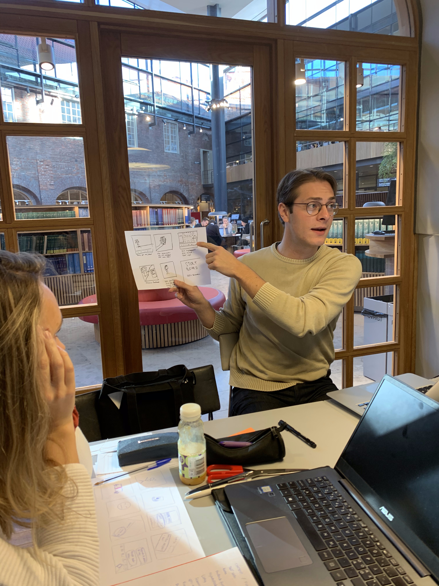
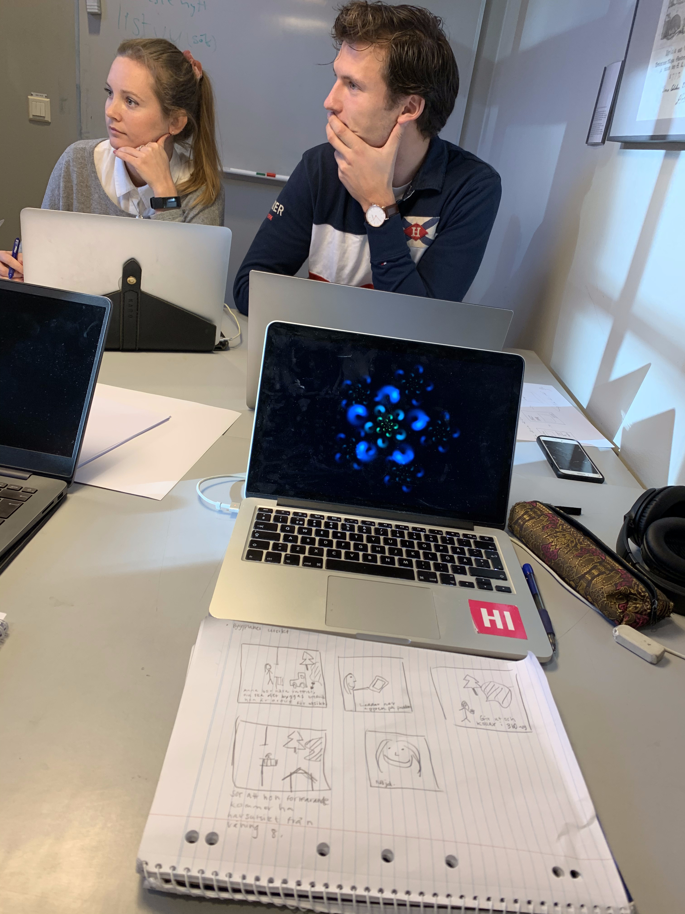
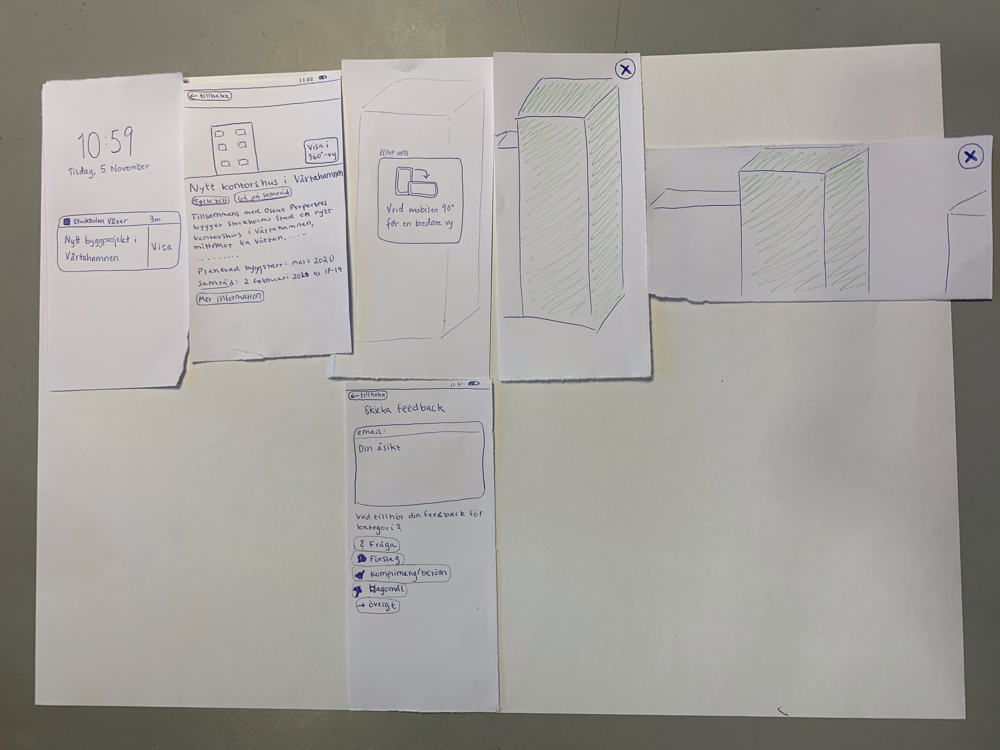
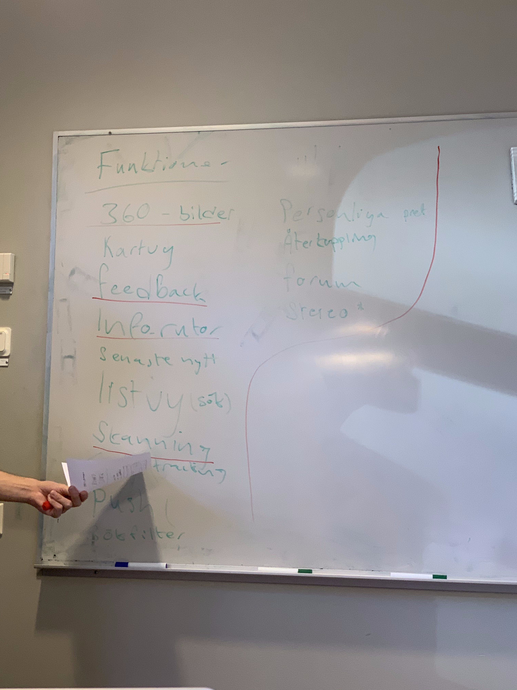

Text om processen och hur vi kom fram till det vi gjorde
Text om litteraturstudien
Text om litteraturstudien
Text om litteraturstudien
Text om litteraturstudien
We held a focus group with five participants who were selected based on thir level of interest in planned construction work and willingness to affect it. *** FOTO FRÅN FOKUSGRUPP ***
Text om prototypen
   Some content.